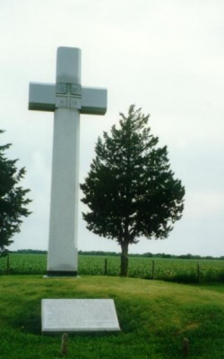

The Fr. Juan Padilla Cross is located near Lyons, KS.
This Cross is erected to the memory of Father Padilla, a Franciscan Missionary, who stood with Coronado at the erection of the first Christian Cross on these Kansas prairies. Father Padilla devoted his life to the service of the cross and to the Indians of Quivira and suffered a martyr’s death in that service in the year of Our Lord 1542.
The symbol on the cross is inscribed “Jesus Christ, Victor,” and expresses the victory of faith and sacrifice. The square, quartered by the cross, denotes the four corners of the World brought into Christian unity when Father Padilla carried the cross of Christianity to the center of the New World.
This monument is a gift to the People of Kansas by the Knights of Columbus of this State. Erected 1950.

© Knights of Columbus - Kansas State Council
For comments or questions please email webmaster@kansas-kofc.org